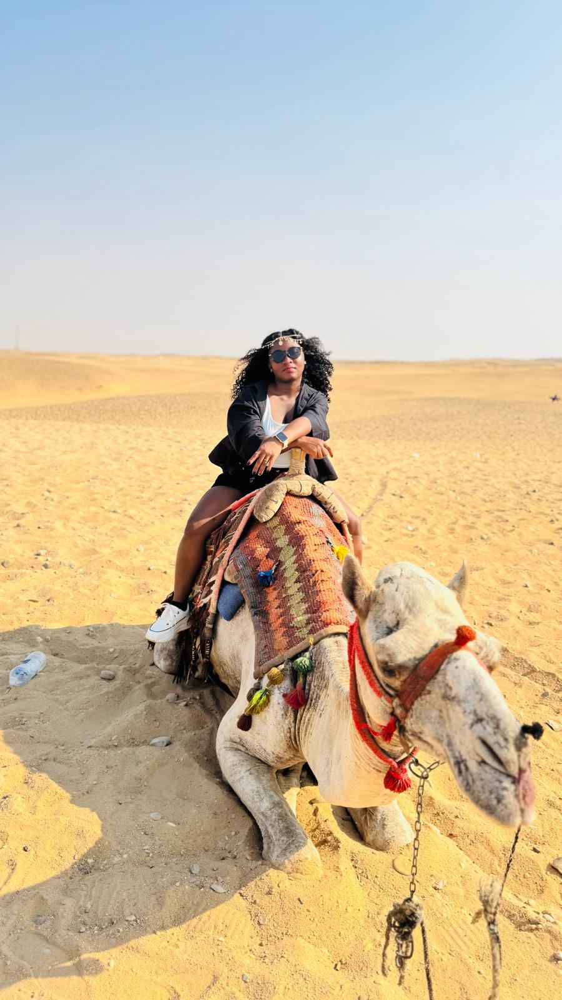
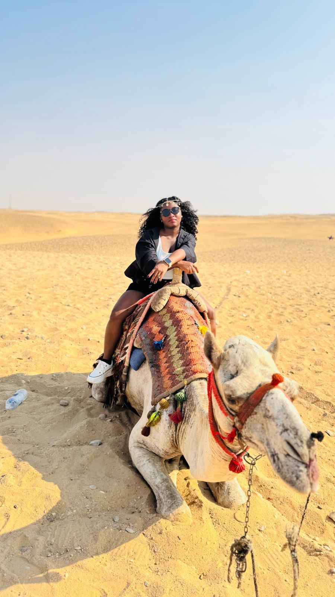
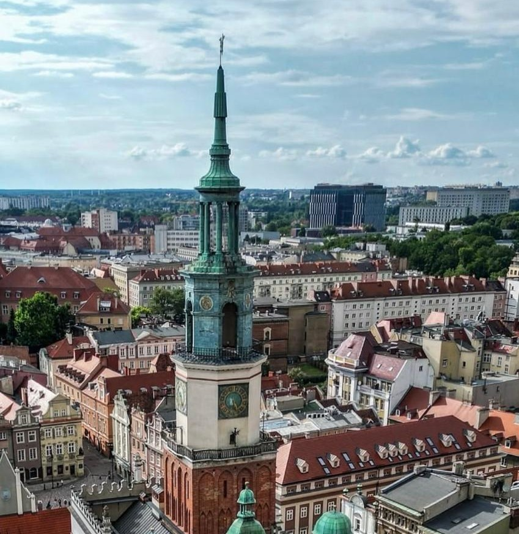
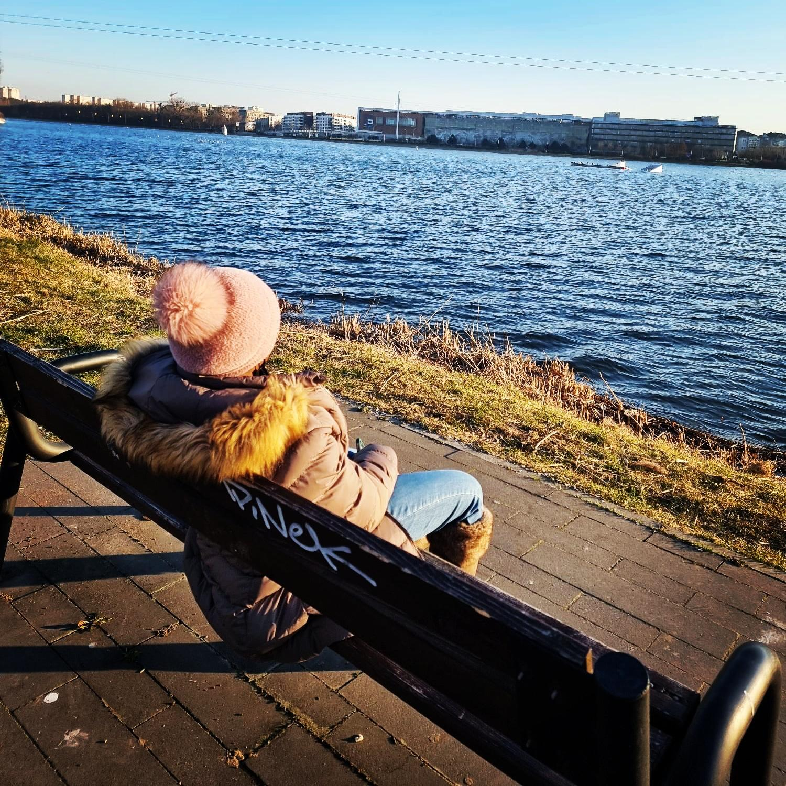
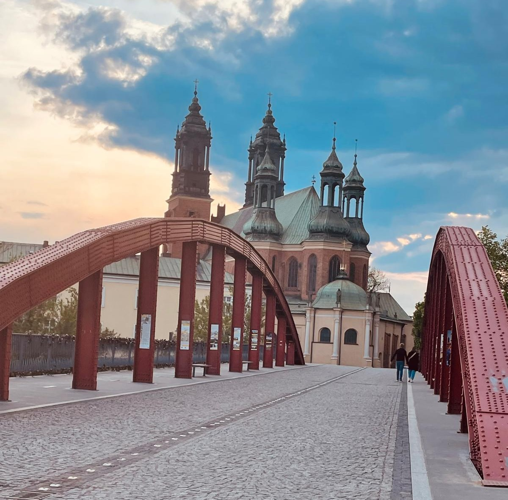
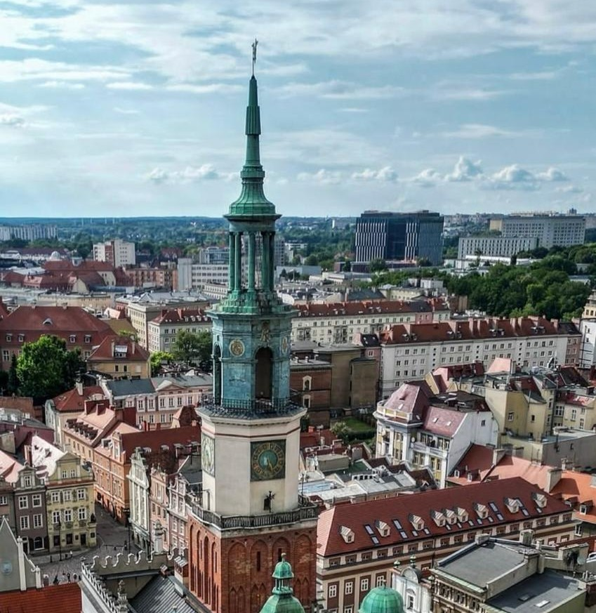
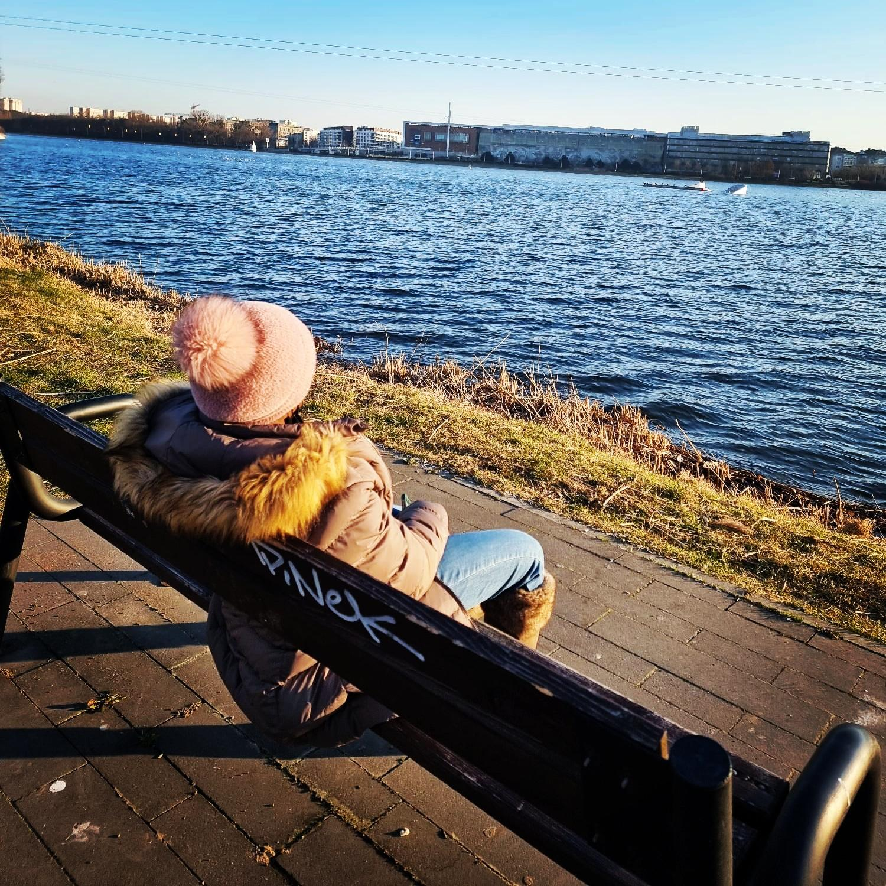
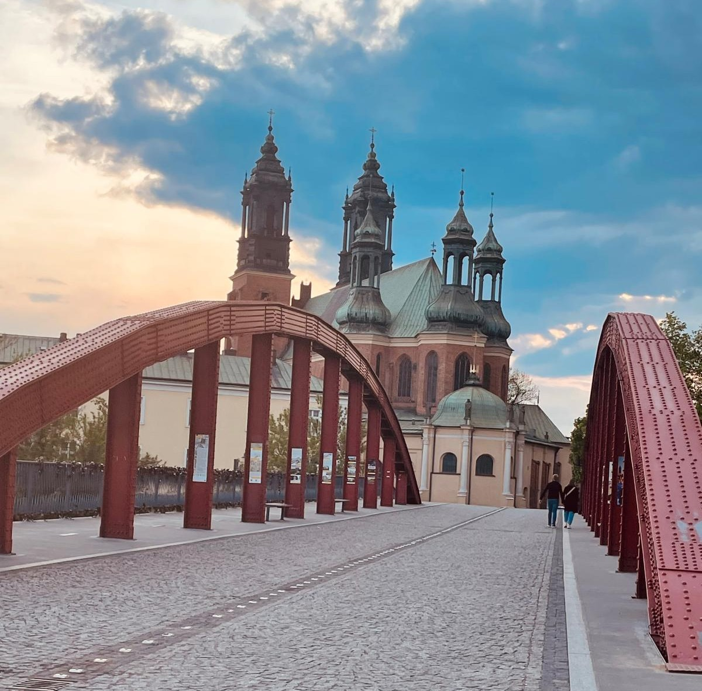
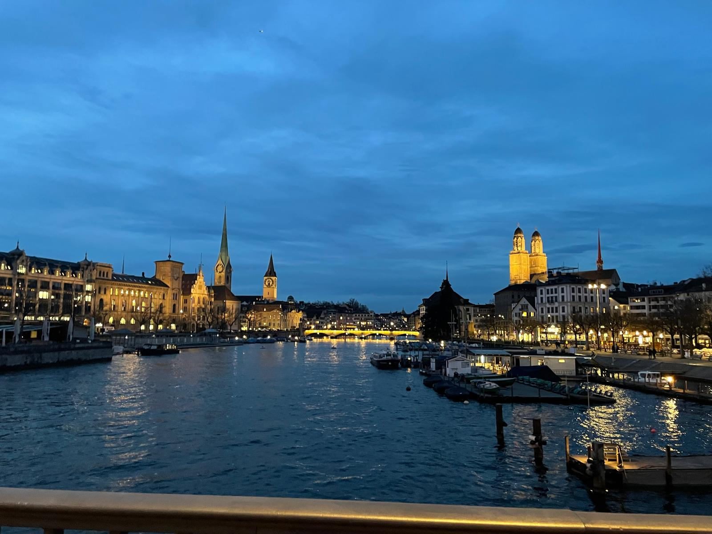
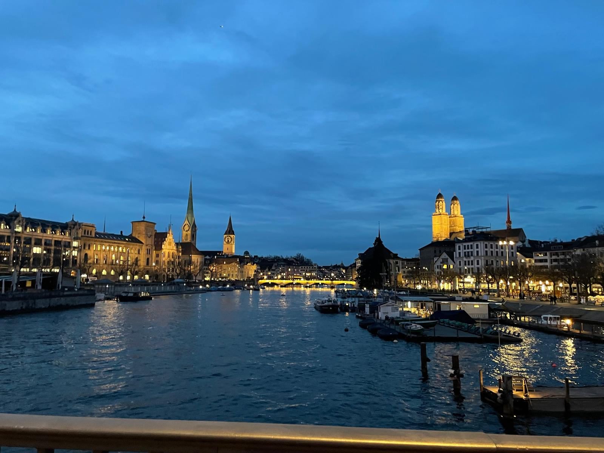

BLOG POSTS

Berlin, Germany
Checkpoint Charlie - in Berlin, an iconic representation of the division between East and West Berlin, symbolizing the broader conflict between...
Read more »

Budapest, Hungary
Budapest, the capital of Hungary, rich in history with stunning architecture, and vibrant culture. One of its most iconic landmarks is the Hungarian..
Read more » 

Cairo, Egypt
Cairo, Egypt's sprawling capital, is a city of contrasts—where ancient wonders stand shoulder to shoulder with the bustle of modern life. Known as the...
Read more »


Gdańsk, Poland
Gdańsk, with the largest port of the baltic region, is one of Poland's most beautiful and historically rich cities. Known for its maritime...
Read more » 





Poznań, Poland
Poznań, one of Poland's oldest cities, combines centuries of history with a modern, youthful spirit. The Old Market Square dazzles with...
Read more »
London, United Kingdom
London, a vibrant metropolis known for its deep historical roots, modern landmarks, and cultural diversity. Although it’s not traditionally known...
Read more »Copenhagen, Denmark
The charming capital of Denmark, is a city built around water. Its scenic canals, harbors, and coastal location make it one of the most liveable...
Read more »


Oslo, Norway
Oslo, a stunning blend of modern urban living and rich history, surrounded by nature. One of its most iconic landmarks is the Oslo Opera House...
Read more »


Venice, Italy
Venice, "the floating city", is one of the most iconic destinations in the world, renowned for its intricate network of canals, stunning architecture...
Read more » 


Zurich, Switzerland
Switzerland’s largest city and one of Europe’s major financial and cultural hubs. Nestled by Lake Zurich and surrounded by the Alps...
Read more »
Bern, Switzerland
Set along the Aare River and surrounded by hills, Bern offers a unique mix of history, culture, and natural beauty...
Read more »Tallinn, Estonia
Tallinn, city where medieval charm intertwines with modern vibrancy. Its rich history is reflected in its well-preserved architecture...
Read more »Warsaw, Poland
Warsaw, Poland's dynamic capital, blends a rich past with bold modernity. Its meticulously rebuilt Old Town, a UNESCO World Heritage Site...
Read more »Helsinki, Finland
The capital of Finland, is renowned for its rich history, architectural beauty, and vibrant cultural scenes which collectively narrate Helsinki's...
Read more »Hurghada, Egypt
Hurghada, a vibrant resort town on Egypt's Red Sea coast, is known for its crystal-clear waters, coral reefs, and endless sunshine. Once a small fishing village...
Read more »Luxor, Egypt
Luxor, Egypt's open-air museum, is a city where ancient history comes to life. Once the capital of the pharaohs, it's home to some of the world's most iconic...
Read more »Tiranë, Albania
Tiranë, a city that's vibrant, colorful, and full of history. It has evolved rapidly over the past few decades, transforming from a grey communist..
Read more »
Sarandë, Albania
Sarandë, Albania, is a captivating coastal city nestled along the Ionian Sea, offering a harmonious blend of ancient history, cultural heritage, and natural...
Read more »Corfu, Greece
Corfu (Kerkyra), one of Greece’s most enchanting islands, is located in the Ionian Sea near the northwest coast of the country. With its Venetian charm...
Read more »Kotor, Montenegro
Kotor's blend of historical landmarks, natural beauty, and cultural heritage makes it a must-visit destination for travelers seeking a rich and immersive..
Read more »Ksamil, Albania
Ksamil, Albania — often described as the “Ionian gem of the Balkans†— is a small coastal town in southern Albania, near the Greek border. Though quaint in size...
Read more »Dubrovnik, Croatia
Dubrovnik, often called the "Pearl of the Adriatic," is a breathtaking city on Croatia's southern coast, known for its stunning medieval architecture and vibrant...
Read more »


Leipzig, Germany
Leipzig - a dynamic city in eastern Germany, is celebrated for its musical heritage, creative energy, and green spaces. While it doesn't have mountains...
Read more »


Liverpool, United Kingdom
Liverpool - a city once defined by its maritime might, now stands as a vibrant symbol of cultural legacy, musical revolution, and Northern resilience...
Read more »
Düsseldorf, Germany
Checkpoint Charlie - in Berlin, an iconic representation of the division between East and West Berlin, symbolizing the ideaological and ...
Read more »